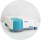
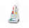

Любимые приборы
Название
Статус
-
pH-метр Mettler-Toledo International, Inc. SevenCompact S220
-

Спектрофотометр Varian, Inc Cary 50 Bio
-

Титратор
-
Коагулометр Tcoag, KC 4 Delta
-
Коагулометр Tcoag, KC 4 Delta